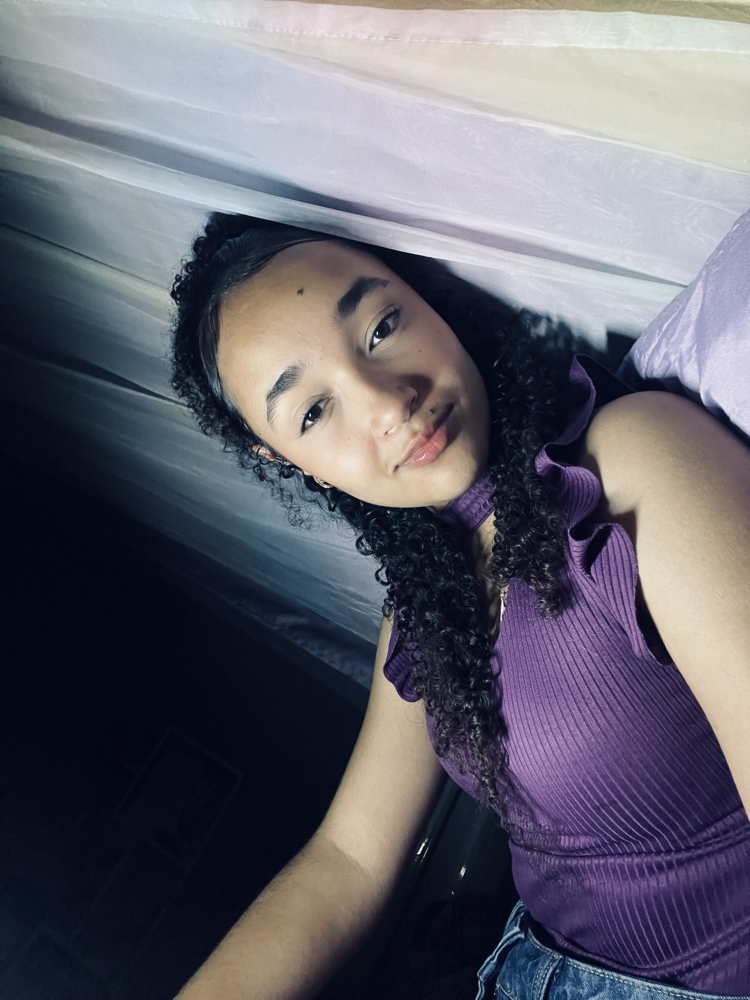

Antes que me Esqueçam
Lorrayne Soares Miranda nasceu em 25 de abril de 2010, em Belo Horizonte, Minas Gerais. Filha de Luciane Soares Martins e Ronaldo Manasses Miranda, cresceu na cidade de Sabará, onde construiu suas raízes, amizades e vivências.
Desde pequena, Lorrayne sempre teve um jeito tranquilo e introspectivo, apreciando momentos de descanso e valorizando seu tempo. Gosta de se entreter assistindo séries, atividade que faz parte do seu cotidiano.
Sua trajetória escolar começou no CAIC, onde estudou desde os 4 anos de idade. Com dedicação, concluiu o Ensino Fundamental II aos 14 anos, marcando uma etapa importante de sua formação. Aos 15 anos, deu início a um curso de informática na Escola Estadual Professor João de Arruda Pinto, buscando ampliar seus conhecimentos e se preparar para novas oportunidades.
No aspecto religioso, Lorrayne é católica e participa ativamente da vida da igreja. Integra o coral “Cantores do Altíssimo”, na Paróquia Maria Mãe do Senhor, onde expressa sua fé através da música e do convívio comunitário.
Com uma personalidade serena e em constante desenvolvimento, Lorrayne segue construindo sua história, equilibrando estudos, interesses pessoais e seus objetivos para o futuro.
Sobre mim
Desde cedo, minha trajetória foi marcada por fases intensas e cheias de aprendizados. Cresci em uma família cercada de muito carinho, vivendo com minha mãe e meu pai em um ambiente acolhedor.
Tenho dois irmãos por parte de pai, que não moraram comigo durante a infância. Por outro lado, sempre tive uma relação muito forte com meus primos. Crescemos juntos, construindo memórias incríveis, e até hoje mantemos essa proximidade.
No ensino fundamental, vivi alguns dos momentos mais marcantes da minha vida. O 7º ano, especialmente no CAIC, foi inesquecível, sendo um período cheio de amizades e momentos especiais.
Quando entrei no ensino médio, uma nova fase começou. Encontrei novas oportunidades e experiências que estão contribuindo para meu crescimento pessoal e acadêmico.
Atualmente continuo meus estudos e também curso informática, buscando desenvolver meus conhecimentos e me preparar para novas oportunidades.
Um dos meus grandes sonhos é cursar Odontologia e construir, futuramente, minha própria carreira profissional nessa área.
Minha história continua sendo construída através de aprendizados, sonhos, desafios e novas experiências. Cada fase contribui para a pessoa que estou me tornando.
Minhas Habilidades
Organização
Tenho facilidade para organizar minhas atividades, estudos e compromissos, procurando manter uma rotina organizada.
Responsabilidade
Procuro realizar minhas atividades com dedicação, compromisso e responsabilidade.
Trabalho em equipe
Tenho facilidade para trabalhar com outras pessoas, compartilhar ideias e colaborar durante atividades e projetos.
Comunicação
Busco me comunicar de maneira clara e respeitosa, aprendendo cada vez mais através do contato com outras pessoas.
Informática
Possuo conhecimentos em informática e continuo desenvolvendo minhas habilidades na área de tecnologia.
Desenvolvimento Web
Tenho conhecimentos em criação de páginas utilizando HTML e CSS, desenvolvendo sites organizados, funcionais e personalizados.
Meus Projetos
Desenvolvimento Web
Desenvolvimento de páginas utilizando HTML e CSS, colocando em prática conhecimentos relacionados à criação e estilização de sites.
Organização e Ferramentas Digitais
Utilização da tecnologia e de ferramentas digitais para auxiliar na organização das atividades, trabalhos e projetos.
Meu Site Pessoal
Este próprio site representa um dos meus projetos. Nele, reúno informações sobre minha história, habilidades, projetos, currículo e formas de contato.
Meu Currículo

Fale comigo
Será um prazer receber sua mensagem!